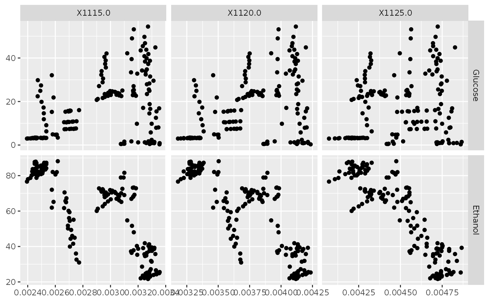
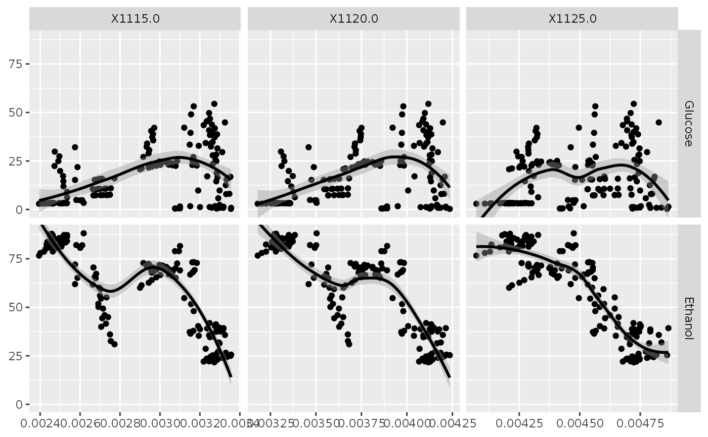
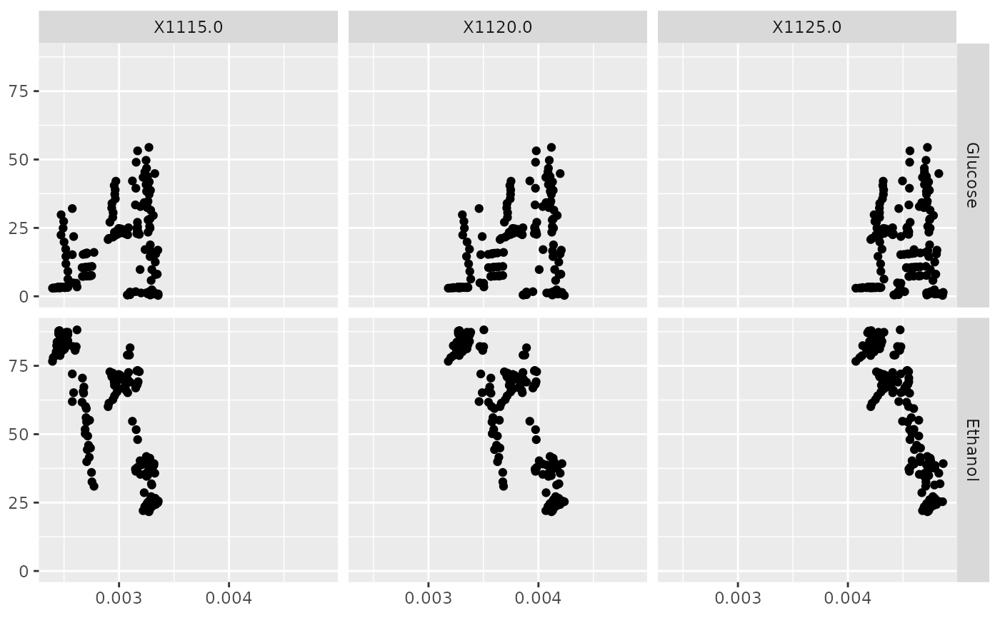

Single ggplot2 plot matrix with facet_grid
data.frame that contains all columns to be displayed. This data will be melted before being passed into the function fn
aesthetic mapping (besides x and y). See aes()
columns to be displayed in the plot matrix
rows to be displayed in the plot matrix
function to be executed. Similar to ggpairs and ggduo, the function may either be a string identifier or a real function that wrap understands.
extra arguments passed directly to fn
column and row labels to display in the plot matrix
plot matrix labels
parameter supplied to ggplot2::facet_grid. Default behavior is "free"
# Small function to display plots only if it's interactive
p_ <- GGally::print_if_interactive
if (requireNamespace("chemometrics", quietly = TRUE)) {
data(NIR, package = "chemometrics")
NIR_sub <- data.frame(NIR$yGlcEtOH, NIR$xNIR[, 1:3])
str(NIR_sub)
x_cols <- c("X1115.0", "X1120.0", "X1125.0")
y_cols <- c("Glucose", "Ethanol")
# using ggduo directly
p <- ggduo(NIR_sub, x_cols, y_cols, types = list(continuous = "points"))
p_(p)
# using ggfacet
p <- ggfacet(NIR_sub, x_cols, y_cols)
p_(p)
# add a smoother
p <- ggfacet(NIR_sub, x_cols, y_cols, fn = "smooth_loess")
p_(p)
# same output
p <- ggfacet(NIR_sub, x_cols, y_cols, fn = ggally_smooth_loess)
p_(p)
# Change scales to be the same in for every row and for every column
p <- ggfacet(NIR_sub, x_cols, y_cols, scales = "fixed")
p_(p)
}
#> 'data.frame': 166 obs. of 5 variables:
#> $ Glucose: num 9.78 17.08 27.05 33.41 39.5 ...
#> $ Ethanol: num 40.3 39.1 37.9 37.3 36.4 ...
#> $ X1115.0: num 0.00319 0.00324 0.00317 0.00315 0.00315 ...
#> $ X1120.0: num 0.00401 0.00404 0.00398 0.00397 0.00397 ...
#> $ X1125.0: num 0.00458 0.0046 0.00457 0.00455 0.00456 ...


